The diary
The trek
Written in 2009 on an iPhone, in the evenings at the lodges – whenever there was power and signal.
Getting there
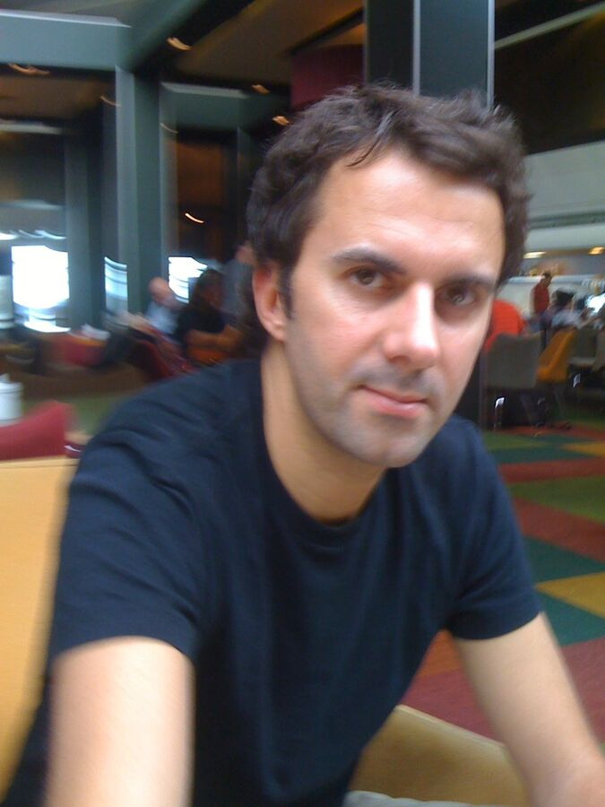
September 18, 2009
I'm off then …
▲
September 18, 2009
Good night, Dubai
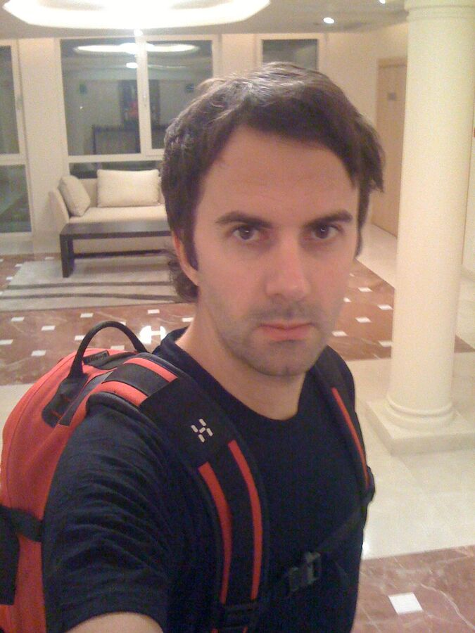
September 19, 2009
Bye Bye Du-bye
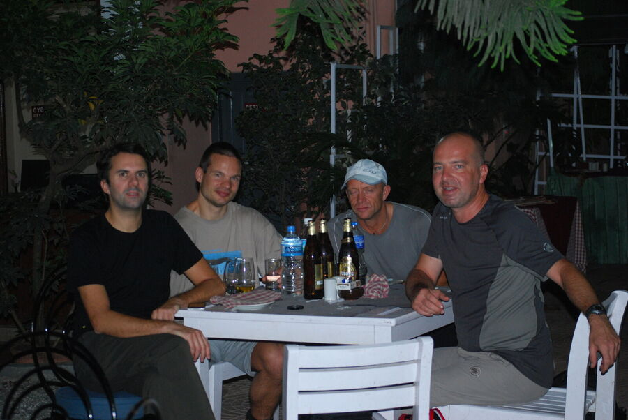
Day 2
Kathmandu
On the trail in the Khumbu
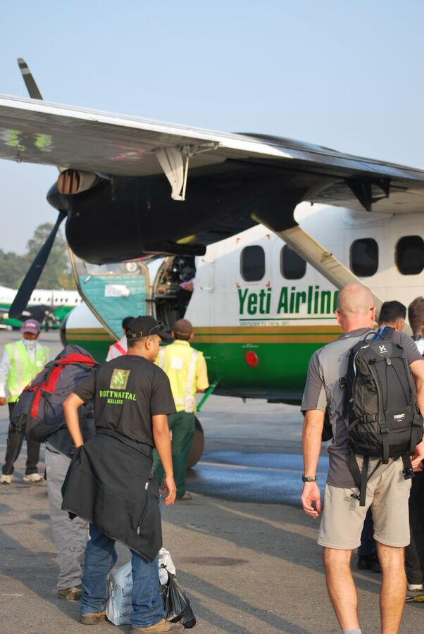
Day 3
Phakding – 2,600 m
2,600 m
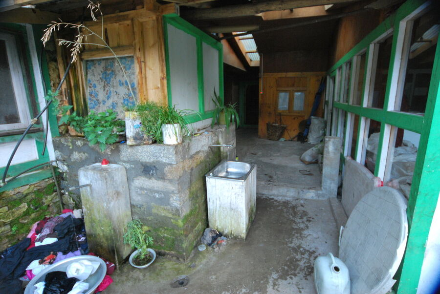
Day 4
Namche Bazaar – 3,450 m
3,450 m
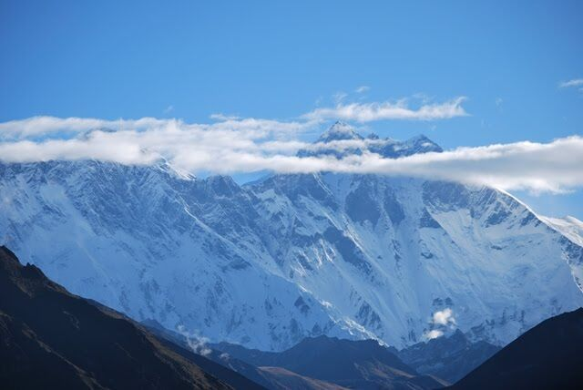
Day 5
Namche Bazaar – acclimatisation day
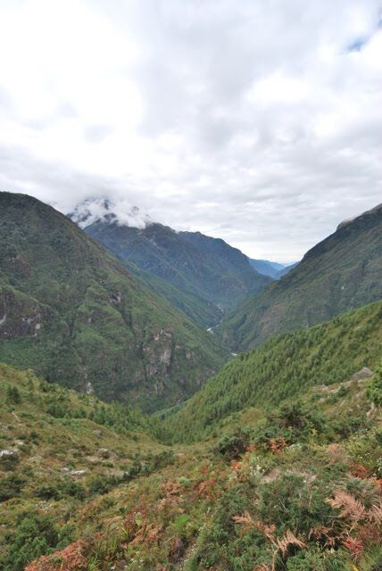
Day 6
Dole – 4,080 m
4,080 m
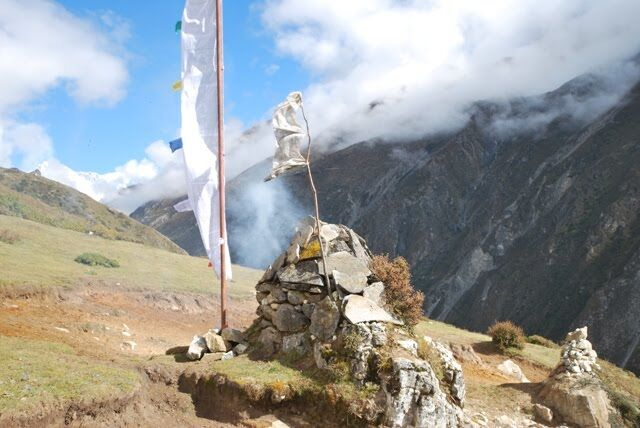
Day 7
Machermo – 4,400 m
4,400 m
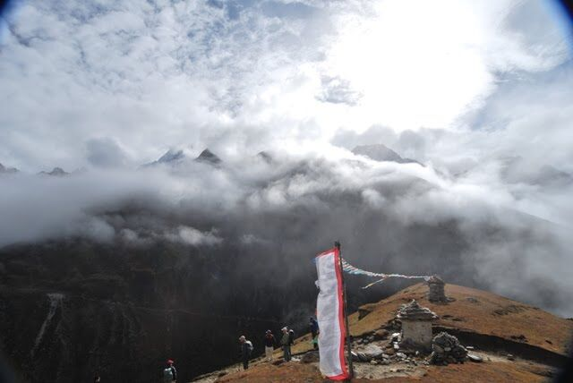
Day 8
Machermo – acclimatisation day
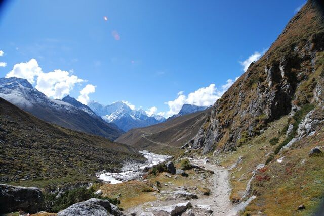
Day 9
Gokyo – 4,750 m
4,750 m
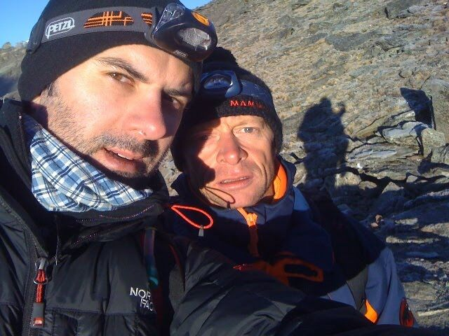
Day 10
Gokyo Ri & Dragnag
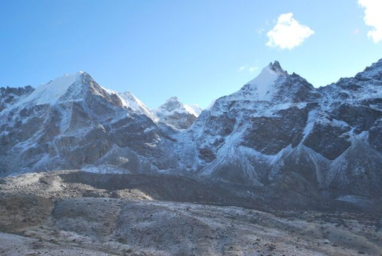
Day 11
Over the Cho La Pass (5,370 m) to Lobuche (4,900 m)
5,370 m4,900 m

Day 12
Lobuche – acclimatisation day
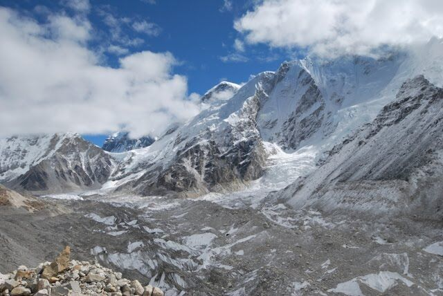
Day 13
Everest Base Camp (5,360 m) and Gorak Shep (5,130 m)
5,360 m5,130 m
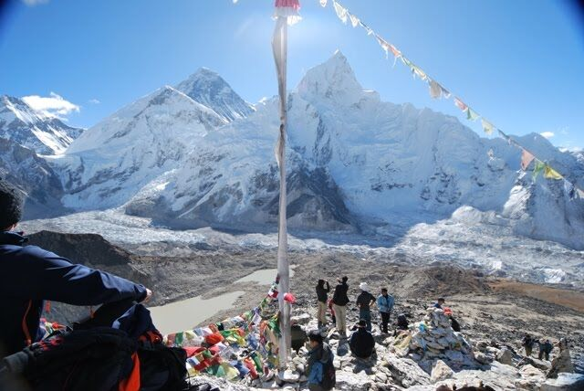
Day 14
Kala Patthar (5,550 m) and Pheriche (4,280 m)
5,550 m4,280 m
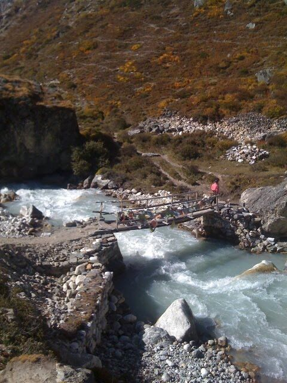
Day 15
Tengboche – 3,860 m
3,860 m
Back in Kathmandu
May to September 2009
Preparation
Booking, training, gear and a fundraiser for children in Nepal.
- Money arrivedThe donation of 6.151 EUR arrived. I already received a thankful e-Mail by Emma Taylor, President of Sunrise Children's Association Inc. Australia. She wrote: "[...] And we have just …
- DonationToday I closed the donation period. Thanks for following donations: 01. 15 € 02. 20 € 03. 20 € 04. 20 € 05. 20 € 06. 40 € 07. 50 € 08. 50 € 09. 50 € 10. 50 € 11. 50 € 12. 100 € 13. 100 € …
- New flights bookedBecause our flights were cancelled, we had to book new flights. Ralf and I will now meet in Dubai, have a night there, and fly on the next day with a stop-over in Bahrain to Kathmandu. The …
- Fitness trainingToday was my first attempt to start the fitness program again. I started to do a short round, but then I decided to run from Dusseldorf to Neuss to friends. In the end I ran 12,5 km through …
- 2nd day of shoppingAt August, 10th, I bought the rest of the equipment. 1x goretex rain-jacket (Strech Infinity Jacket Men, black) = 325 € 1x trekking-boots (Yukon marone, size 10) = 160 € 1x shoe …
- 1st day of shoppingMy last training day was the 20.06.2009. In the meantime I ran 2 or 3 times but I didn't count it. I need to work more regular on my fitness. I will defitively start this week in Germany …
- RestartSince one month I didn't work on my fitness program and I feel not good because of it. Next week I will fly to Mallorca and I will have the time to work on it harder. But I also want to …
- Hello from TurkeyIn the last days I couldn't write my blog because we moved from Dubai to Turkey. And on top of this I felt a bit sick. Now we arrived in Istanbul and tomorrow our furniture (from Germany) …
- BreakYesterday we left Dubai for good. In the last two weeks I had been a little bit sick because of the whole moving process. Now we are in Turkey and we will need approx. two more weeks to …
- EquipmentHere is a list of the equipment, which I need (to buy): Backpack (approx. 30 l) Mountain/trekking boots Sandals/sneakers Sleeping bag Jacket Rain jacket (Gore-Tex or similar) Hiking …
- Jogging results - May 2009Here is a chart of my jogging results of May 2009. If I just ran 5 km than I doubled the time and added 20% on top of the result. The bad result at 20. until 23. May is caused by my aking …
- Donate money for underprivileged children in NepalI decided to use our trip to collect money for poor children in Nepal. We want to donate that money to the "Sunrise Children's Association INC" ( www.scai.org.au ) SCAI is a young and …
- My pal RalfOk, time to introduce my pal and business partner Ralf. He gave me the trip as a gift to my 38. birthday and he is the one who will take care of me in the Himalaya.
- Flight detailsToday we received our flight details. We will travel with Gulf Air. Ralf will come from Frankfurt, I will depart from Istanbul. We both have a stop-over in Bahrain. The destination is …
- PhotographySpiegel online has some tipps for shooting photos in the mountains (tnx Ozan ): Click here to go to the article I still have to buy some camera equipment for the trip, e.g. a tripod …
- Film on the tripHere is a nice youtube-video of Nilsemann who did the same trip as we will do. This can give you a first idea. You can also click on the video-link at the right side. Click here to start …
- Problems with my toeToday I tried to run 10 Km again, but I had to give up at 8,3 Km, because my toe was aking too much. Actually it is not really the toe. I have pains since several days. Maybe I have to go …
- Booked & confirmedI just booked the trip. Start is September, 18th, and the journey lasts 22 days. So we return at October, 10th. Did I already mention that the whole trip is a gift by my dear old friend …
- Physical preparationTo be better prepared I started a more intensive fitness training. Today I ran the first time 10 km (since my school days). My time: 57.30 Min. - not a best time, but for a beginner good …
- View from Kala PattarFrom the highest point (Kala Pattar, 5.500 m) there will be still 3.000 m to the peak of the Mount Everest. Here is a picture of the view from the Kala Pattar to the Mount Everest. But this …
- TourWhich peaks we will climb? What are our steps? Here is a list: Kathmandu (1.355 m) Lukla (2.700 m) Pakding (2.600) Namche Bazaar (3.450 m) Kloster Thame (3.800 m) Khumjung (3.800 m) Dole …
- General InformationAt first some information about the tour: My friend Ralf will join this ride. The chance that at least one of us returns is much higher then :) Our first stop will be Kathmandu in Nepal. …
- Creation of this blogDear Friends, I look forward to this upcoming trip very much. It will truly be a challenge. But first I must understand how to use that modular blog system. I want to give you a lot of …